PC Build Guides
Need a new computer?
This guide should help you greatly!
Go HomeGuide
What computer is right for me?
This all depends on your needs! Gaming computers would need more graphical power while if your task is just simply browsing the internet, you would need much less power.
Should I build or buy?
If you don't know anything about building a computer you might want to buy a prebuilt system (from a reputable source). However, if you have friends who can help you then you could go for it! Currently the cryptocurrency market is affecting the price of GPUs (graphics cards). So, sometimes you can really get a graphics card for a really inflated price. The same story goes for DDR4 RAM (random access memory). DDR4 ram is in high demand right now since more mobile phones are using DDR4 (Source). If you are still reading this and you are really keen on building a computer and want to learn from it, then it is possible.
What laptop should I buy for gaming!?!?
Because laptops have portability, size, and the all in one form factor. They are a little bit more expensive than a desktop. I have learned that buying a cheap laptop for gaming (around $200-$500) is a terrible idea. If your budget is less than 700 dollars or so I would recommend to save up money for a better laptop. The wait will definately be worth it. Why will the wait be worth it? As of now, I see the laptop market as "getting what you paid for". So, buying a laptop for 200 dollars would be terrible as outdated, slow hardware would bottleneck its potential. As technology advances, laptops will get thinner and more powerful. We see examples of this with Ryzen + Vega processors and MaxQ technology. Hopefully some of these new technologies will help bring laptop costs down for the budget user.
What are some good prebuilt systems?
Prebuilt systems really depend on the specificiations and manufacturer. Although, the one tip I will give you is DO NOT buy a small form factor prebuilt PC. Cooling is troubling sometimes and will shorten your computers life. Here are a few brands I would recommend. For computer spec recomendations, take a look at the next section. If building a PC scares you and you do not want to go through the hassle sometimes, this is the better option.
What parts should I get?
Parts depend on what you plan to do with your system. If you just plan to game then very high core count isn't going to be very important to you. Simply buying the best in the market for over $5,000 is not ideal unless you plan to use all the power. So based on part recommendations are listed below. Also, when building your PC ALWAYS use PCPartPicker it is THE BEST and ONLY way to find all the parts you need. Just click Start a System Build and click each component to find the one you are looking for!
CPU:
For gaming a 4-6 core CPU should suffice. The AMD Ryzen 5 is currently a great priced CPU lineup. For a 4 core a Ryzen 5 1400 is good value. And an AMD 6 core option is the Ryzen 5 1600. But, for the Intel fans the i7 8700k is a good 6 core option too. Just remember, AMD uses the AM4 motherboard socket while Intel's 8700k uses the LGA1151.
Motherboard:
Motherboard really does not matter except for the socet type. As said Intel uses the LGA1151. But, something really important is that the Coffee Lake series MUST use a Z370 motherboard while the Skylake and Kaby Lake use the Z270 platform. AMD uses the AM4 socket running on a A320, B350, or X370 motherboard will work. For the average gamer, a B350 board covers all the things you will need such as Overclocking and just enough I/O ports.
CPU Cooler:
The two choices for coolers are air coolers or water cooling. If you do not overclock your CPU then an air cooler should be ok. However, if you overclock your CPU to the extreme then a AIO or all in one water cooler should help with that the high tempratures. This is a very important part of your computer as a CPU getting thermal throttled can limit the performance of it and reduce the life of your CPU. With AMD Ryzen the stock coolers are plentiful for lite overclocking. For overclocking a recommended cooler is the Corsair H100i v2 or an NZXT Kraken x62.
Power Supply:
An underwattaged power supply can hurt your system. Use PcPartPickers recommended wattage and add 300-400 more watts and you should be covered. If you are on a tight budget pick up an 80+ Bronze power supply. If you have some money an 80+ Gold power supply is higher quality. Some recommended brands are SeaSonic, EVGA, and Corsair.
Case:
Cases are a personal preference. Just make sure to get one that will fit your motherboard size (ATX, mATX or ITX).
Graphics Card:
One of the most important parts of your system is the graphics card. If you are not picky about the brand, the best brand to go with currently is NVIDIA. Some options (ranging from lowest performance to highest) is the 1050ti, 1060, 1070, 1070ti, 1080, and 1080ti. Currently with graphics cards, prices are inflated due to cryptocurrency mining. Go to this chart to see how inflated prices are and if it is even worth getting the graphics card. If you want to run anything max at 4k or run a 1080 or a 1080ti should work beautifully. Some reputable brands for graphics cards are as follows: EVGA, Gigabyte, Asus, MSI, Zotac, PNY, Corsair (Hydro Series).
RAM:
RAM or random access memory is a component commonly used to store information tempoarily.